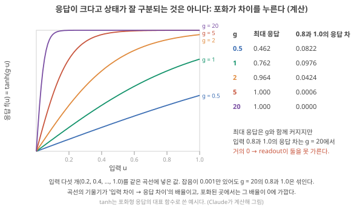
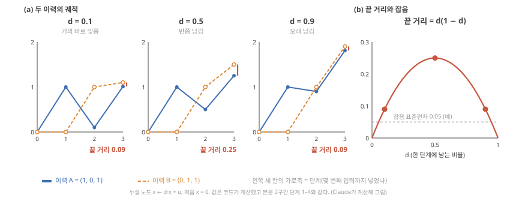
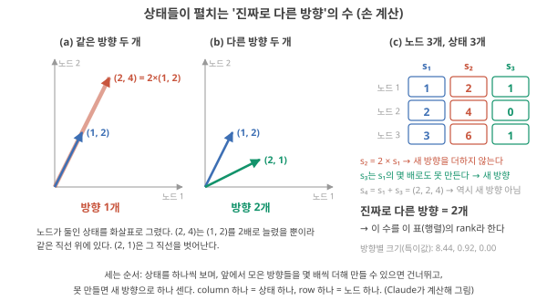
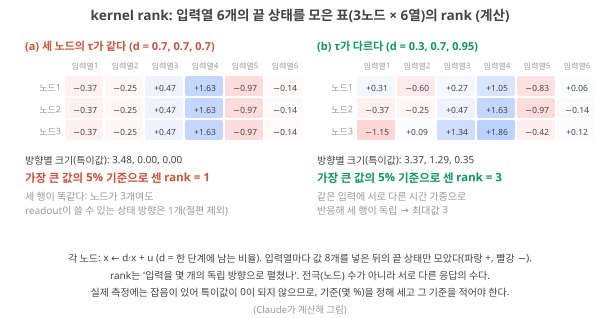
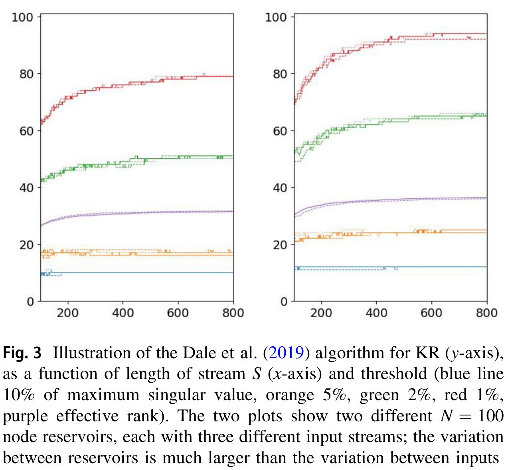
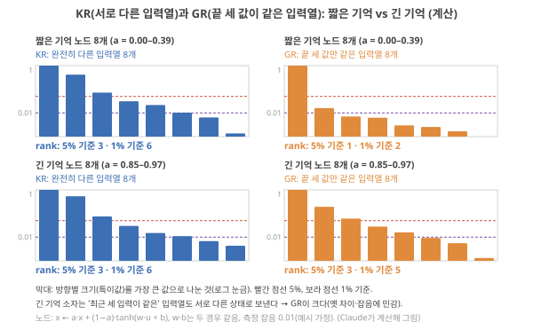

Day 25. 분리·rank·일반화: 상태는 얼마나 다른가
Phase 3 · 좋은 시스템이란 무엇인가
이번 질문 다른 입력은 다른 상태로, 비슷한 입력은 비슷한 상태로 가는지 어떻게 재나?
왜 배우나 구동을 세게 할 때 응답 크기가 아니라 응답 차이를 봐야 상태가 갈리는 범위를 찾는다.
오늘의 장면 입력 이력 여러 개 → 끝 상태 모으기 → 거리·거리 ÷ 흔들림·rank 세기 → separation·KR·GR 숫자
오늘 반드시 응답이 크다 ≠ 입력 차이가 상태 차이로 남는다(포화가 지운다). rank는 노드 수와 상태 수 중 작은 값을 넘지 못한다.
나중에 봐도 됨 특이값 손계산 · 절편의 답 수 · 유효 rank
넘어가는 기준 '오늘 반드시'를 내 말로 말할 수 있으면 충분합니다.
이후 쓰이는 곳 Day 27–30 정확도·기준선 해석 · Day 33–34 흔들림·device 편차 · Day 55–56 구동 진폭 스캔
지난 학습 복습
지난 학습 단위(Day 24 · 과제의 시간척도와 좋은 memory의 조건)의 핵심을 다른 예로 확인합니다. 고르는 즉시 맞았는지와 이유가 보입니다. 틀려도 아래 학습자료는 그대로 열려 있고, 틀린 문제에는 다시 볼 곳이 붙습니다.
사전 테스트 (선택)
사전 테스트 펼치기 · 배우기 전에 짐작해 보는 문제 (선택)
학습자료
Day 23–24에서는 "기억"을 셋으로 나눴습니다. device의 retention(쓴 값이 정해진 기준 안에서 남아 있는 시간), 모형의 τ(변화가 원래로 돌아가는 시간의 척도), 그리고 readout(상태 숫자들에서 답을 꺼내도록 학습한 직선)까지 포함한 계의 memory capacity. 이번에는 reservoir(입력을 받아 상태로 바꾸는, 학습하지 않는 물리계 또는 신경망)의 다른 두 재료, 비선형성과 상태의 다양성을 같은 방식으로 따집니다. device 논문은 흔히 "전류가 10⁴배 변한다", "히스테리시스 고리가 크다", "전극이 16개다"를 좋은 reservoir의 근거로 듭니다. 질문은 그 숫자들이 계산 능력에 대해 무엇을 말해 주고 무엇을 말해 주지 못하느냐입니다. 앞을 알아야 뒤가 읽히니 순서대로 가세요.
이 주제의 질문 순서 — 이번 Day 25에서는 구간 1–4만 읽습니다. 나머지는 Day 26에서 이어집니다(구간 번호는 원래 한 묶음이던 순서 그대로입니다).
- "응답이 크다"는 무엇을 잰 값이고, 왜 그것만으로는 부족한가? → 구간 1
- 서로 다른 입력을 서로 다른 상태로 보내는지(분리)는 어떻게 재나? → 구간 2
- 상태들이 "진짜로 다른 방향"을 몇 개나 펼치나? — rank와 kernel quality → 구간 3
- 비슷한 입력은 비슷한 상태로 보내는가? — 일반화와 generalization rank → 구간 4
- 전극(채널) 수와 상태의 차원은 왜 다른가? (Day 26에서)
- 비선형성은 무엇으로 평가하나 — 전기적 비선형과 계산에 쓰이는 비선형 (Day 26에서)
1. 큰 응답 변화의 함정: 포화가 상태의 차이를 누른다
끝나면 할 수 있는 것. "응답이 크다"와 "입력의 차이가 상태의 차이로 남는다"가 다른 말이라는 것을 숫자로 보이고, device를 너무 세게 구동하면 왜 계산 능력이 줄어드는지 말할 수 있다.
상황. 어떤 논문이 device에 전압 펄스를 넣었더니 전류가 10⁴배 바뀌고 히스테리시스 고리(전압을 올릴 때와 내릴 때 전류가 다른 길을 그리는 고리)가 크다고 보여 준 뒤, "풍부한 동역학이 있으므로 reservoir로 쓸 수 있다"고 씁니다. 이 문장이 맞는지 판단하려면 먼저 readout이 무엇을 보는지 떠올려야 합니다.
복습 두 가지. Day 10에서 본 readout은 상태 숫자들에 weight를 곱해 더하는 직선입니다. 그러니 readout이 답을 가를 수 있으려면 "다른 답을 가져야 할 입력이 서로 다른 상태로 끝나야" 합니다(Day 10 기초 2: 과제와 읽을 수 있는 상태). 그리고 Day 17 기초: 비선형에서 본 대로, 선형이란 입력을 두 배로 하면 출력도 두 배, 두 입력의 합을 넣으면 출력도 두 출력의 합이 되는 성질(superposition principle)이고, 이것이 깨지는 응답이 비선형입니다. 포화(어느 이상은 더 오르지 않는 것)는 가장 흔한 비선형입니다.
응답의 크기와 응답의 차이 — 기울기가 정하는 것
왜 필요한가. readout은 상태의 크기가 아니라 상태들 사이의 차이로 답을 가릅니다. 0.8 V를 넣었을 때와 1.0 V를 넣었을 때 상태가 똑같으면, 응답이 아무리 커도 둘은 같은 답을 받습니다.
작은 숫자로. 포화형 응답의 대표로 \(f(u) = \tanh(g \cdot u)\)를 씁니다. \(\tanh\)는 어떤 수가 들어와도 −1과 1 사이로 눌러 주는 S자 곡선이고, \(g\)는 "얼마나 세게 구동하나"를 나타내는 배율입니다(전압 진폭이나 펄스 폭을 키우는 것에 해당한다고 보면 됩니다. 실제 device에서 어느 손잡이가 \(g\)에 해당하는지는 device마다 다릅니다). 입력 0.8과 1.0을 넣어 봅니다.
응답을 키우려고 \(g\)를 1에서 20으로 올리면, 입력 0.8과 1.0의 응답 차이는 커질까요, 줄어들까요? 그림 1을 보기 전에 정해 두세요.
무엇을 볼지. 그림 1의 가로축은 입력 \(u\)(0–1), 세로축은 응답 \(\tanh(g \cdot u)\)(0–1)이고, 색 하나가 \(g\) 하나입니다. \(g\)가 클수록 곡선이 빨리 올라가 꼭대기(1)에 붙습니다. 가로축 0.8과 1.0 사이에서 각 곡선이 얼마나 올라가는지(기울기(slope): 입력이 조금 바뀔 때 응답이 몇 배로 바뀌나)를 보고, 그림 1(b) 표의 두 열을 비교하세요.

단계 1 — 약하게 구동(\(g = 1\)). \(\tanh(0.8) = 0.664\), \(\tanh(1.0) = 0.762\). 두 응답의 차이는 0.0976. 최대 응답은 0.762.
단계 2 — 조금 세게(\(g = 2\)). \(\tanh(1.6) = 0.922\), \(\tanh(2.0) = 0.964\). 차이는 0.0424로 줄었습니다. 최대 응답은 0.964로 커졌습니다.
단계 3 — 아주 세게(\(g = 20\)). \(\tanh(16)\)과 \(\tanh(20)\)은 둘 다 소수 넷째 자리까지 1.0000. 차이는 0.0000. 최대 응답은 1.000으로 가장 큽니다.
정리. 응답의 크기는 \(g\)와 함께 커지는데, 입력 차이가 남기는 응답 차이는 오히려 사라집니다. 측정 잡음이 0.001만 있어도 \(g = 20\)에서 0.8과 1.0은 구별되지 않습니다. 곡선의 기울기가 "입력 차이 → 응답 차이"의 배율이고, 포화된 구간에서는 그 기울기가 0에 가깝기 때문입니다.
이름과 뜻. 이 교재에서 "응답이 크다"는 최대 변화량(on/off 비 = 켜졌을 때와 꺼졌을 때 전류의 비, 전류 변화 배수, 히스테리시스 고리의 넓이)을, "구분 가능하다"는 다른 입력이 남긴 상태의 차이가 잡음보다 큰 것을 뜻합니다. 둘은 다른 양입니다.
폴더 원문은 뭐라고 하나. 세 문헌이 같은 경고를 서로 다른 말로 합니다.
- Stepney(물리 reservoir computing, 줄여서 physical reservoir computing의 튜토리얼, Natural Computing 2024)는 입력의 크기를 정할 때 "입력이 reservoir 동역학을 흔들 만큼 충분히 커야 하지만, 계를 포화시킬 만큼 커서는 안 된다"고 씁니다. Stepney 2024, p.668 서지: S. Stepney, Natural Computing 23, 665–685 (2024)
- Liang(Nat. Electron. 2024, 내가 읽은 리뷰)은 time multiplexing(device 하나를 시간으로 잘게 나눠 여러 노드처럼 쓰는 방법, Day 18 기초)에서 한 입력 조각의 길이 θ가 너무 길면 "다음 값이 오기 전에 포화"해 노드 응답이 두 값으로 몰리고(쌍안정(bistable)) 상태가 빈약해지며, 너무 짧으면 노드가 작은 진폭의 선형 구간에서만 움직인다고 씁니다. Liang 2024, p.198 너무 약해도(선형) 너무 세도(포화) 나쁘다는 같은 말입니다.
- Singh(Adv. Mater. 2026, 물리 reservoir의 재료·device 관점 전망 논문)은 비선형성 설계 규칙의 실패 신호로 "응답이 거의 선형", "비선형 응답이 불안정한 스위칭 근처에서만 나타남", "시행마다 큰 편차", "포화가 reservoir 상태 사이의 차이를 압축함"을 표로 적고 Singh 2026, p.9, "최적화의 목표는 가장 큰 히스테리시스나 가장 가파른 기울기 변화가 아니라, 현실적인 자극에서 반복해서 상태를 만들어 내는 재현 가능한 비선형 구간"이라고 씁니다. Singh 2026, p.5 서지: K. RB Singh et al., Adv. Mater. 2026, e74897
"on/off 비와 히스테리시스가 클수록 좋은 reservoir다" — 아닙니다. 큰 변화는 device가 반응한다는 증거일 뿐, 서로 다른 입력이 서로 다른 상태로 남는다는 증거가 아닙니다. 그림 1처럼 응답을 키우는 구동이 오히려 상태 사이의 차이를 지울 수 있습니다. 비휘발 메모리(값을 오래 저장하는 device)에서 좋은 지표인 큰 on/off 비가 reservoir에서는 포화의 신호일 수도 있습니다. 해석
- readout은 상태의 크기가 아니라 상태 사이의 차이로 답을 가른다. 차이의 배율은 응답 곡선의 기울기다.
- 세게 구동하면 응답은 커지지만 포화 구간에서 기울기가 0에 가까워져 차이가 사라진다(\(g = 20\): 0.8과 1.0의 차 0.0000, Claude 계산).
- 너무 약하면 선형, 너무 세면 포화. 세 문헌이 같은 조건을 말한다 Stepney 2024, p.668 Liang 2024, p.198 Singh 2026, p.5, 9.
- 남은 질문: 입력이 한 번이 아니라 여러 번 이어 들어올 때, "다른 이력 → 다른 상태"는 어떻게 재나? → ‘separation(분리)’ 구간.
2. 분리: 다른 입력 이력은 다른 상태로 끝나는가
끝나면 할 수 있는 것. 두 입력 이력이 남긴 상태의 거리를 손으로 계산하고, 그 거리가 잡음보다 커야 한다는 조건과, 기억이 너무 짧거나 길면 순서 정보가 왜 사라지는지 말할 수 있다.
상황. 제스처를 가려내는 센서에서 두 동작이 같은 신호 조각의 순서만 바꾼 것일 수 있습니다. reservoir의 끝 상태가 둘을 다르게 만들어야 readout이 가를 수 있습니다. 이 구간은 그 "다르다"를 거리 하나로 재고, 같은 입력을 반복 측정했을 때의 흔들림과 비교하는 법입니다.
‘큰 응답의 함정’ 구간은 입력 하나짜리였습니다. reservoir에는 입력이 시간 순서로 이어 들어오고, 상태는 지난 입력들의 흔적을 함께 담습니다(Day 15 기초: fading memory — 오래된 입력의 영향은 점점 줄어들어 결국 잊힌다는 성질). 그러니 질문은 "다른 이력(history: 입력의 순서 있는 목록)이 다른 상태로 끝나는가"가 됩니다.
분리(separation): 두 이력이 남긴 상태의 거리
왜 필요한가. "1, 0, 1"이 들어온 경우와 "0, 1, 1"이 들어온 경우를 다르게 답해야 하는 과제(예: 순서를 알아야 하는 제스처 구분)라면, 두 이력이 서로 다른 상태로 끝나야 readout이 가를 수 있습니다.
무엇을 재나. 상태가 숫자 하나면 거리(distance)는 두 값의 차이의 크기 \(|x_A - x_B|\)입니다. 상태가 숫자 여러 개(노드 여러 개)면 노드마다 차이를 제곱해 더한 뒤 제곱근을 씌운 값, 즉 평면에서 두 점 사이의 직선거리를 늘린 것을 씁니다. 노드 두 개에서 상태가 (1, 2)와 (4, 6)이면 차이는 (3, 4), 거리는 \(\sqrt{3^2 + 4^2} = 5\)입니다.
작은 숫자로 따라가기. 노드 하나, 규칙은 지난 상태를 \(d\)배로 줄여 남기고 새 입력을 더하는 \(x \leftarrow d \cdot x + u\)입니다. \(d\)는 한 단계에 남는 비율(0이면 바로 잊고, 1에 가까우면 오래 남김)로, Day 15–16·Day 23–24의 \(d\)와 같은 양입니다(Day 23의 ‘MC 손 계산’ 구간: 노드의 식). Day 23–24의 노드는 새 입력에 \((1-d)\)를 곱했지만, 여기서는 계산을 쉽게 하려고 입력 배율을 1로 둡니다(Day 15–16의 식과 같은 꼴). 같은 기호 \(a\)를 쓰는 leak rate(다음 상태를 새 값 쪽으로 옮기는 비율, Day 16의 ‘Spectral radius와 leak rate’ 구간: 헷갈리기 쉬운 다섯 숫자)와는 다른 양이니 섞지 마세요.
이력 A = (1, 0, 1)과 B = (0, 1, 1)을 넣습니다. 두 이력은 들어간 숫자도 같고(1이 두 번, 0이 한 번) 마지막 입력도 같으며 순서만 다릅니다.
무엇을 볼지. 그림 2(a)의 세 칸은 \(d\) = 0.1, 0.5, 0.9인 노드에 두 이력을 넣은 궤적(trajectory)입니다. 가로축은 단계(몇 번째 입력까지 넣었나), 세로축은 상태 \(x\)입니다. 파랑 실선이 A, 주황 점선이 B이고, 각 칸 오른쪽 끝의 빨간 세로 막대가 끝 상태 사이의 거리입니다. 막대 길이가 \(d\)에 따라 어떻게 바뀌는지 먼저 보세요.

단계 1 — \(d = 0.5\), 이력 A. 처음 \(x = 0\). 1이 들어오면 \(0.5 \times 0 + 1 = 1\). 0이 들어오면 \(0.5 \times 1 + 0 = 0.5\). 1이 들어오면 \(0.5 \times 0.5 + 1 = 1.25\).
단계 2 — \(d = 0.5\), 이력 B. 0 → \(x = 0\). 1 → \(0.5 \times 0 + 1 = 1\). 1 → \(0.5 \times 1 + 1 = 1.5\). 거리는 \(|1.25 - 1.5| = 0.25\).
단계 3 — 기억이 짧을 때(\(d = 0.1\)). A: 1 → 0.1 → 1.01. B: 0 → 1 → 1.1. 거리 0.09. 앞의 입력을 거의 잊어서 두 이력이 비슷해졌습니다.
단계 4 — 기억이 길 때(\(d = 0.9\)). A: 1 → 0.9 → 1.81. B: 0 → 1 → 1.9. 거리 역시 0.09. 이번에는 오래 남기는 바람에 상태가 "들어온 숫자의 합(둘 다 2)"에 가까워져 순서가 흐려졌습니다.
정리. 이 예에서 거리는 \(d(1-d)\)이고 \(d = 0.5\)에서 가장 큽니다(0.25). 순서를 가르는 능력은 기억이 짧아도, 길어도 줄어듭니다. Day 23–24에서 본 "τ가 입력 간격보다 훨씬 짧으면 지워지고, 훨씬 길면 평균된다"(Day 24 기초: 시간척도 정합)가 같은 이야기입니다.
잡음과 비교해야 거리가 뜻을 갖는다. 같은 입력을 여러 번 넣어도 측정한 상태는 조금씩 흔들립니다. 그 흔들림의 전형적인 크기가 표준편차입니다(분산의 제곱근이라 상태와 단위가 같다, Day 23 기초: 분산·상관²). 예를 들어 0.95, 1.05, 0.95, 1.05로 흔들리면 평균 1에서 ±0.05씩 벗어나므로 표준편차는 0.05입니다(개수 n으로 나눈 값. Day 23–24의 기본인 n−1로 나누면 약 0.058). 표준편차가 0.05라면, 거리 0.25는 잡음의 5배이고 0.09는 2배도 안 됩니다.
앞의 경우는 readout이 대부분 맞게 가르고, 뒤의 경우는 자주 헷갈립니다. 그러니 분리는 거리 자체가 아니라 거리 ÷ 잡음으로 읽어야 합니다. 잡음은 같은 입력을 여러 번 넣어 상태가 얼마나 흔들리는지로 잽니다(Day 33–34에서 자세히). 해석
포화가 끼면. 위 노드의 상태를 그대로 읽지 않고 \(\tanh(5x)\)처럼 세게 포화하는 응답으로 읽는다고 합시다. \(d = 0.5\)에서 A는 \(\tanh(6.25) = 0.999993\), B는 \(\tanh(7.5) = 0.999999\)로 거리가 \(6.8 \times 10^{-6}\)입니다. ‘큰 응답의 함정’ 구간의 함정이 이력에서도 그대로 나타납니다. 응답은 1에 가까울 만큼 "크지만" 순서 정보는 남지 않습니다.
이름. 서로 다른 입력 이력을 충분히 다른 상태로 보내는 성질을 액체 상태 기계(LSM: 스파이크를 주고받는 뉴런 회로를 reservoir로 쓰는 방식, Day 11–12)를 제안한 Maass 등은 분리 성질(separation property)이라고 불렀습니다. Maass 2002 미확인 원문은 폴더에 없음 Stepney는 ESN(무작위로 고정한 순환 신경망을 reservoir로 쓰는 방식, Day 11–12)의 무작위 weight가 입력을 고차원 공간으로 투영해(입력 몇 개를 노드 수만큼 많은 숫자로 옮겨 적어) "학습한 선형 출력 변환으로 원하는 클래스 분리를 얻게 한다"고 설명하고, 투영마다 좋고 나쁨이 과제에 따라 다르다고 덧붙입니다. Stepney 2024, p.668 Day 17 기초: 선형 분리에서 본 "직선 하나로 두 무리를 가를 수 있는가"가 바로 이 거리들이 어떻게 놓였는가의 문제입니다.
거리는 클수록 좋은가? 잡음이나 과제와 무관한 옛 입력의 차이까지 크게 벌려 놓으면, readout은 그 무관한 차이를 외워 버릴 수 있습니다. "다른 것은 멀리, 비슷한 것은 가까이"라는 두 조건이 함께 필요하고, 뒤의 조건이 ‘generalization(일반화)’ 구간의 일반화입니다.
- 분리 = 다른 입력 이력이 남긴 상태의 거리. 상태가 여럿이면 노드별 차이를 제곱해 더하고 제곱근.
- 순서만 다른 A = (1, 0, 1)과 B = (0, 1, 1): 남는 비율 \(d\)인 leak 노드에서 거리 \(d(1-d)\), \(d = 0.5\)에서 0.25로 최대, \(d = 0.1\)·\(0.9\)에서 0.09. 짧아도 길어도 순서가 흐려진다.
- 거리는 잡음과 비교해야 뜻이 있다(거리 ÷ 잡음). 포화된 읽기(\(\tanh(5x)\))는 거리를 \(10^{-6}\) 수준으로 지운다(Claude 계산).
- 남은 질문: 상태가 수십 개, 입력 이력이 수십 개면 거리를 일일이 볼 수 없다. 한 숫자로 요약할 방법은? → ‘rank’ 구간.
3. Rank: 상태들이 몇 개의 "진짜로 다른 방향"을 펼치나
끝나면 할 수 있는 것. 3×3 숫자 표에서 "진짜로 다른 방향"의 수(rank)를 손으로 세고, 특이값이 그 방향마다의 크기라는 것을 같은 표의 숫자로 확인하고, kernel quality(kernel rank)가 어떤 실험으로 재는 값이며 왜 기준(몇 %)을 함께 적어야 하는지 말할 수 있다.
상황. 논문이 입력 이력을 수십 개 넣고 끝 상태를 모아 표로 만들었습니다. 이력 쌍마다 거리를 일일이 보면 수백 개라 감당이 안 됩니다. 이 구간은 표 전체를 숫자 하나(rank)로 요약하는 법이고, 핵심은 "다른 상태의 몇 배인 상태는 새 정보가 아니다"라는 한 가지입니다.
‘separation(분리)’ 구간처럼 두 이력의 거리를 하나씩 재는 일은 이력이 많아지면 감당이 안 됩니다. 이 구간은 "여러 이력이 남긴 상태들이 얼마나 다양하게 퍼져 있나"를 숫자 하나로 요약하는 방법입니다. 행렬(숫자를 row·column으로 늘어놓은 표)과 벡터(숫자 목록)는 Day 2 기초에서 본 그대로입니다. 여기서는 상태 하나 = 숫자 목록 하나(노드마다 숫자 하나)로 씁니다.
진짜로 다른 방향의 수 — 행렬의 rank
왜 필요한가. readout은 상태의 숫자들에 weight를 곱해 더합니다. 그래서 어떤 상태가 다른 상태를 통째로 몇 배 한 것이라면, readout에게는 새로 쓸 재료가 생기지 않습니다(아래 'readout에 주는 뜻'에서 숫자로 확인합니다). 상태가 몇 개냐보다 진짜로 다른 방향이 몇 개냐가 readout이 할 수 있는 일을 정합니다. 그 수를 세는 법부터 봅니다.
상태를 화살표로 그리기. 노드가 2개인 상태 (1, 2)는, 가로축이 노드 1의 값이고 세로축이 노드 2의 값인 평면에서 원점에서 점 (1, 2)로 가는 화살표입니다. 화살표에서 방향(어느 쪽을 가리키나)과 길이(얼마나 긴가)를 따로 봅니다. (2, 4)는 (1, 2)를 통째로 두 배 한 것이라 같은 직선 위에서 두 배 길 뿐 방향은 같습니다. (2, 1)은 그 직선을 벗어나므로 다른 방향입니다. 노드가 3개면 화살표가 3차원 공간에 놓일 뿐 생각은 같습니다. "방향이 같다"는 "한쪽이 다른 쪽의 몇 배"라는 뜻입니다.
표의 모양. 노드가 \(N\)개, 입력 이력(표본)이 \(S\)개이면, 표본 하나의 상태를 column 하나로 세워 \(N \times S\) 표를 만듭니다. 이것을 상태 행렬(state matrix)이라 부릅니다. row(행) 하나는 노드 하나가 표본마다 낸 값이고, column(열) 하나는 표본 하나의 상태입니다.
작은 예: 노드 3개, 입력 이력 3개. 세 이력이 남긴 상태가 다음과 같다고 합시다(각 상태는 노드 1·2·3의 값).
- 상태 \(s_1 = (1, 2, 3)\)
- 상태 \(s_2 = (2, 4, 6)\)
- 상태 \(s_3 = (1, 0, 1)\)
무엇을 볼지. 그림 3(a)(b)는 노드가 둘일 때의 화살표입니다. 같은 직선 위에 겹친 두 화살표(a)와 서로 다른 직선 위의 두 화살표(b)를 비교하세요. (c)의 표는 위의 3×3 예를 'column 하나 = 상태 하나'로 적은 것이고, 표 아래 세 줄이 바로 아래 단계 1–3입니다. 맨 아래 회색 '방향별 크기(특이값)'는 이 구간 뒤쪽에서 계산하니 지금은 건너뛰세요.

단계 1 — \(s_2\)는 새로운가? 노드마다 비교합니다. \(2 = 2 \times 1\), \(4 = 2 \times 2\), \(6 = 2 \times 3\). \(s_2\)는 \(s_1\)을 통째로 두 배 한 것입니다. 화살표로 그리면 같은 방향으로 두 배 길 뿐이라 새 방향이 아닙니다.
단계 2 — \(s_3\)는 새로운가? \(s_3\)가 \(s_1\)의 몇 배라면 첫 숫자에서 배수는 1이어야 합니다(\(1 = c \times 1\)). 그런데 그러면 둘째 숫자가 \(1 \times 2 = 2\)여야 하는데 실제는 0입니다. 어떤 배수로도 안 되므로 \(s_3\)는 새 방향입니다. (\(s_2\)는 \(s_1\)과 같은 직선 위에 있으므로, "\(s_1\)의 몇 배인가"만 확인하면 \(s_1\)·\(s_2\)가 이미 가진 방향 전체와 비교한 셈입니다.)
단계 3 — 섞어서 만들 수 있으면 새 방향이 아니다. 지금까지 방향은 \(s_1\) 쪽과 \(s_3\) 쪽 둘입니다. 넷째 이력이 \(s_4 = (2, 2, 4)\)를 남겼다고 해 봅시다. 이것은 \(s_1 + s_3 = (1+1, 2+0, 3+1)\)이라 두 방향을 섞어 만들 수 있으므로 역시 새 방향이 아닙니다. 두 방향의 "몇 배씩 더하기"(Day 19–20에서 본 가중합. 정식 이름은 선형 결합(linear combination))로 만들 수 있는 상태는 모두 같은 평면 위에 있습니다. 그래서 새 방향인지 확인할 때는 "한 상태의 몇 배인가"만이 아니라 "이미 모은 방향들을 몇 배씩 더해 만들 수 있나"를 봅니다.
이름. 상태는 셋이지만 진짜로 다른 방향은 2개입니다. 이렇게 센 "진짜로 다른 방향의 수"를 그 숫자 표(행렬)의 rank(계수)라고 합니다. 손으로 셀 때의 순서는 늘 같습니다. 상태를 하나씩 보며, 앞에서 모은 방향들의 몇 배씩 더하기로 만들 수 있으면 건너뛰고, 못 만들면 새 방향으로 하나 셉니다. 마지막에 센 개수가 rank입니다. 이 예의 상태 행렬(노드 3 × 표본 3)의 rank는 2입니다.
상한. 노드 \(N\)개, 상태 \(S\)개로 만든 표의 rank는 \(N\)과 \(S\) 중 작은 값, 곧 \(\min(N, S)\)를 넘을 수 없습니다. 방향은 노드 수보다 많을 수 없고(숫자가 \(N\)개인 목록이 갈 수 있는 서로 독립인 방향은 \(N\)개), 상태 수보다도 많을 수 없기 때문입니다(상태 하나는 새 방향을 많아야 하나 더함). 예: 노드 8개에 상태 5개면 rank는 많아야 5입니다.
Readout에 주는 뜻. 이제 rank가 readout의 한계와 어떻게 이어지는지 봅니다.
- 절편(intercept)이 없을 때. readout이 \(y = w_1 x_1 + \cdots + w_N x_N\)(상태의 숫자에 weight를 곱해 더함)이라면, \(s_2 = 2s_1\)일 때 출력도 언제나 두 배입니다. \(y(s_2) = w \cdot 2s_1 = 2\,y(s_1)\). 그래서 \(s_1\)과 \(s_2\)에 +1과 −1을 줄 수 없고, 위 세 이력에 (+1, −1, 0) 같은 답을 동시에 줄 수도 없습니다.
- 절편이 있을 때. 보통 readout은 상수 하나(절편) \(w_0\)를 더합니다: \(y = w_0 + w_1 x_1 + \cdots + w_N x_N\). Day 13–14의 ridge와 Day 21–22의
esn.py도 상태 옆에 늘 1인 칸을 하나 붙여 이 절편을 함께 풉니다. 그러면 위의 막힘이 풀립니다. 상태가 숫자 하나인 가장 작은 예로, \(x = 1\)과 \(x = 2\)에 \(y = 3 - 2x\)를 쓰면 출력은 \(3 - 2 = +1\), \(3 - 4 = -1\)입니다. 절편 3이 "모두에게 똑같이 더하는 몫"을 맡기 때문에 2배 관계가 깨집니다.
그래도 원리는 같습니다. 절편은 '모두에게 같은 몫'이라는 방향 하나를 더할 뿐이고, 따로따로 정할 수 있는 답의 수는 여전히 방향의 수가 정합니다. 아래의 kernel rank는 상태 행렬 자체의 rank를 셉니다. 1을 붙인 줄은 어느 reservoir에나 똑같이 붙으므로 상태의 다양성을 비교할 때는 빼고 셉니다. 해석
심화 · 절편이 있을 때 따로 정할 수 있는 답의 수
- 절편이 있어도 막히는 경우. 같은 직선 위의 상태가 셋 이상이면 다시 막힙니다. \(s, 2s, 3s\)이면 출력은 \(w_0 + k\,(w \cdot s)\), 즉 배수 \(k = 1, 2, 3\)에 대해 직선이라 (+1, −1, +1)처럼 오르내리는 답은 줄 수 없습니다(가장 가깝게 맞춰도 셋 다 0.33).
- 3×3 예에 절편을 붙이면. 각 상태 앞에 1을 붙인 \((1, s)\)들, 즉 \((1,1,2,3)\), \((1,2,4,6)\), \((1,1,0,1)\)은 서로 다른 방향 3개가 되어, 이 세 이력에는 (+1, −1, 0)을 정확히 줄 수 있습니다(numpy로 확인).
- 일반 규칙. 따로따로 정할 수 있는 답의 수 = 1을 붙인 표(\((N+1) \times S\), '설계행렬'이라고도 부름)의 rank이고, 이 값은 \(N + 1\)과 \(S\) 중 작은 값을 넘지 못합니다. 표본이 노드 수보다 훨씬 많은 실제 과제에서는 이 상한이 곧 벽이 됩니다.
방향별 크기 — 특이값. rank는 방향이 "있다/없다"만 셉니다. 그런데 아래 단계들 다음에 보듯 실제 측정에는 잡음 때문에 "아주 작지만 0은 아닌" 방향이 생기므로, 방향마다 상태들이 얼마나 크게 뻗어 있는지를 숫자로 알아야 합니다. 그 숫자가 특이값(singular value. Day 15–16의 '특잇값'과 같은 말)입니다. 재는 도구는 Day 19의 ‘노드 수가 상한’ 구간의 그림자입니다. 길이가 1인 방향 하나를 정하고, 각 상태 화살표를 그 방향에 비춘 그림자 길이(상태의 숫자와 방향의 숫자를 칸마다 곱해 더한 값)를 잽니다. 같은 3×3 표로 따라갑니다.
단계 1 — 전체 퍼짐. 표의 숫자 아홉 개를 모두 제곱해 더합니다. \(s_1\): 1 + 4 + 9 = 14, \(s_2\): 4 + 16 + 36 = 56, \(s_3\): 1 + 0 + 1 = 2. 합은 72입니다. 서로 직각인 방향 세 개를 고르면, 이 72를 세 방향이 나눠 갖습니다(방향마다 "세 상태의 그림자 길이를 제곱해 더한 값"이 그 방향의 몫). 특이값은 몫이 가장 큰 방향부터 차례로 고른 직각 방향들의 몫에 제곱근을 씌운 값입니다.
단계 2 — 아무도 뻗지 않은 방향. 방향 (1, 1, −1)을 봅시다(길이를 1로 맞추려면 \(\sqrt3\)으로 나누지만, 0인지 볼 때는 상관없습니다). \(s_1\): 1 + 2 − 3 = 0, \(s_2\): 2 + 4 − 6 = 0, \(s_3\): 1 + 0 − 1 = 0. 세 상태 모두 이 방향의 그림자가 0입니다. 세 화살표가 이 방향에 수직인 한 평면 안에 누워 있다는 뜻이고, 이 방향의 몫은 0, 특이값 \(\sigma_3 = 0\)입니다. rank 단계의 "상태는 셋이지만 방향은 2개"를 숫자 하나로 본 것입니다.
단계 3 — 가장 많이 뻗은 방향. \(s_1\)의 방향, 곧 (1, 2, 3)을 길이 \(\sqrt{14} \approx 3.74\)로 나눈 방향에 비추면 그림자는 \(s_1\): 14 ÷ 3.74 = 3.74, \(s_2\): 28 ÷ 3.74 = 7.48, \(s_3\): (1 + 0 + 3) ÷ 3.74 = 1.07입니다. 제곱해 더하면 14 + 56 + 1.14 = 71.14, 제곱근은 8.43. 컴퓨터가 몫이 가장 커지도록 방향을 \(s_3\) 쪽으로 조금 기울여 찾은 값이 \(\sigma_1 = 8.44\)(몫 71.16)입니다.
단계 4 — 남은 방향. 세 방향의 몫을 더하면 72여야 하므로 둘째 방향의 몫은 72 − 71.16 − 0 = 0.84, \(\sigma_2 = \sqrt{0.84} = 0.92\)입니다. 이 둘째 방향은 주로 \(s_3\)가 \(s_1\)의 직선에서 벗어난 만큼입니다(컴퓨터로 확인한 이 방향의 그림자 길이: \(s_1\) 0.05, \(s_2\) 0.11, \(s_3\) 0.91. 부호는 뗀 크기).
정리. 특이값은 8.44, 0.92, 0. 0이 아닌 것이 2개이므로 rank 2로, 위에서 손으로 센 것과 같습니다. 특이값은 rank가 버린 정보, 곧 방향마다의 크기를 더 줍니다. 여기서는 둘째 방향이 첫째의 약 1/9입니다. 이렇게 직각 방향들을 몫이 큰 순서로 찾아 주는 계산이 특이값 분해(SVD)이고, 큰 표는 컴퓨터가 합니다. Day 15–16에서는 가장 큰 특잇값을 "표를 한 번 곱할 때 어떤 방향이든 최대 몇 배 늘리나"로 봤는데, 같은 수를 상태 쪽에서 보면 "상태들이 가장 많이 뻗은 방향의 그림자 크기"입니다. [계산] 2 × 2 표라면 고유값으로 끝까지 손으로 구할 수 있습니다(아래 접힌 상자).
심화 · 2 × 2 표의 특이값을 손으로 구하기
표 \(A\)의 특이값은 "\(A\)를 뒤집어 곱한 표 \(A^{\mathsf T}A\)"의 고유값(eigenvalue, Day 16 기초의 '고윳값': 그 방향으로 몇 배 늘리나를 뜻하는 수)에 제곱근을 씌운 것입니다. column 하나를 상태 하나로 보면, \(A^{\mathsf T}A\)의 칸은 상태끼리 칸마다 곱해 더한 값입니다(왼쪽 위 = 첫 상태 자신과, 오른쪽 위 = 첫 상태와 둘째 상태).
- \(A = \begin{pmatrix} 3 & 0 \\ 4 & 5 \end{pmatrix}\)이면 \(A^{\mathsf T}A = \begin{pmatrix} 3\cdot3+4\cdot4 & 3\cdot0+4\cdot5 \\ 0\cdot3+5\cdot4 & 0\cdot0+5\cdot5 \end{pmatrix} = \begin{pmatrix} 25 & 20 \\ 20 & 25 \end{pmatrix}\).
- 이 표는 방향 (1, 1)을 \(25+20 = 45\)배, 방향 (1, −1)을 \(25-20 = 5\)배 늘립니다(직접 곱해 확인해 보세요). 이것이 고유값 45와 5입니다. Day 15–16의 2차방정식으로도 같습니다: \(\lambda^2 - 50\lambda + (25 \cdot 25 - 20 \cdot 20) = \lambda^2 - 50\lambda + 225 = 0\) → \(\lambda = (50 \pm 40)/2\) = 45, 5.
- 제곱근을 씌우면 특이값은 \(\sqrt{45} = 6.708\), \(\sqrt{5} = 2.236\). 둘 다 0이 아니므로 rank 2: 두 방향이 모두 살아 있습니다. 확인: 45 + 5 = 50 = 표의 숫자 제곱합 9 + 0 + 16 + 25(본문 단계 1의 "전체 퍼짐을 방향들이 나눠 갖는다"와 같은 성질).
- 비교: \(A = \begin{pmatrix} 1 & 2 \\ 2 & 4 \end{pmatrix}\)(둘째 column = 상태 (2, 4)가 첫째 (1, 2)의 2배)이면 \(A^{\mathsf T}A = \begin{pmatrix} 5 & 10 \\ 10 & 20 \end{pmatrix}\)이고 고유값은 25와 0, 특이값은 5와 0. 한 방향이 사라져 rank 1입니다. 상태 두 개가 같은 방향을 가리킬 때 일어나는 일이 이것입니다.
잡음이 끼면 0이 사라진다. 위 표의 숫자마다 표준편차 0.02의 측정 잡음을 더하면 특이값이 8.40, 0.91, 0.0068이 됩니다(Claude 계산, 잡음 크기는 예시 가정). 셋째 값이 정확히 0이 아니므로 "0이 아닌 개수"를 세면 rank는 언제나 3이 됩니다. 그래서 실제로는 기준(threshold)을 정합니다. "가장 큰 특이값의 몇 % 아래는 0으로 본다." 셋째 값은 가장 큰 값의 0.08%이니 1% 기준이면 버려지고 rank는 2로 돌아옵니다.
Kernel quality, generalization rank, state diversity
Kernel quality(kernel rank, KR). 위의 rank를 reservoir에 적용한 것입니다. Stepney는 절차를 이렇게 정리합니다. ① reservoir에 서로 최대한 다른 무작위 입력열을 \(S\)개 넣는다. ② 각 입력열이 끝난 시점의 상태(노드 \(N\)개의 값)를 잰다. ③ 그 상태들을 column으로 늘어놓은 \(N \times S\) 표를 만든다. ④ 그 표의 rank를 센다. 최대값은 \(N\)과 \(S\) 중 작은 값이고, KR이 높을수록 서로 다른 입력을 선형 readout이 가를 수 있게 펼쳐 놓았다는 뜻입니다. Stepney 2024, p.677–678 Liang도 같은 정의를 소개합니다. Liang 2024, p.200
Generalization rank(GR). 같은 절차를 쓰되 입력열을 서로 비슷하게 만듭니다(예: 끝의 몇 값을 같게, 또는 아주 작은 범위의 값만). 비슷한 입력이 비슷한 상태로 가면 rank가 낮게 나오고, Stepney는 "GR이 낮을수록 잡음에 강하다"고 씁니다. Stepney 2024, p.678 자세한 것은 ‘generalization(일반화)’ 구간(그 구간의 그림에서 KR과 GR 두 실험을 나란히 봅니다).
두 실험을 나란히 놓으면 다음과 같습니다. 세는 법은 같고 넣는 입력열이 다릅니다.
| KR 실험 | GR 실험 | |
|---|---|---|
| 넣는 입력열 \(S\)개 | 서로 최대한 다른 무작위 입력열 | 서로 비슷한 입력열(끝 몇 값이 같거나, 아주 작은 범위의 값만) |
| 세는 것 | 끝 상태로 만든 \(N \times S\) 표의 rank(기준 몇 %) | 같음 |
| 묻는 것 | 다른 입력을 갈라 놓나 | 비슷한 입력(잡음·옛 차이)을 한데 모으나 |
| 보통 바라는 쪽 | 높을수록 | 낮을수록(단, 과제가 정함 — ‘generalization(일반화)’ 구간) |
State diversity(상태 다양성). 위 두 rank, 그리고 ‘채널 수 ≠ 차원’ 구간에서 볼 참여비 차원처럼 "상태들이 서로 얼마나 독립적인 방향으로 퍼져 있나"를 묻는 지표들을 묶어 부르는 이 교재의 말입니다. 노드 수나 전극 수와는 다른 양입니다. 해석
무엇을 볼지. 그림 4는 노드 3개에 서로 다른 입력열 6개를 넣은 끝 상태 표 두 개입니다(column 하나 = 입력열 하나의 끝 상태, row 하나 = 노드 하나). (a) 표의 세 row가 서로 같은지, (b) 표는 다른지 먼저 보고, 그다음 표 아래의 특이값과 5% 기준 rank를 읽으세요.

그림 4(a)는 Day 23–24의 "같은 τ를 가진 노드는 기억이 겹친다"를 rank로 다시 본 것입니다. 전극이 셋이어도 응답이 같은 것의 배수이면 readout에게는 방향 하나입니다.
기준은 반드시 적어야 한다. Stepney는 잡음과 수치 오차 때문에 특이값이 보통 전부 0이 아니어서, 가장 큰 특이값의 몇 %를 기준으로 잡는다고 씁니다. 절대값으로 잡으면 안 되는데, 단위만 바꿔도(예: A를 mA로) 특이값이 함께 바뀌기 때문입니다. 그리고 기준은 "본질적으로 임의적이고 측정된 rank에 영향을 주므로 결과와 함께 적어야 한다"고 씁니다. Stepney 2024, p.678–679 또 입력열 수 \(S\)를 늘리면 rank가 어느 값으로 수렴할 때까지 커지므로 \(S\)를 미리 정해야 하고 Stepney 2024, p.678, Liang은 상태의 잡음을 고려한 rank 계산이 필요하다고 덧붙입니다. Liang 2024, p.200
심화 · 기준 없이 쓰는 연속값: 유효 rank
Stepney는 기준 없이 쓸 수 있는 연속값으로 유효 rank(effective rank)도 소개합니다. 특이값을 합이 1이 되게 나눈 비율 \(p_i\)로 \(\exp(-\sum_i p_i \ln p_i)\)를 계산한 값이고, 특이값 R개가 똑같고 나머지가 0이면 정확히 R이 됩니다. Stepney 2024, p.679 위 3×3 예(8.44, 0.92, 0)는 \(p\) = 0.90, 0.10이라 유효 rank 1.38입니다(Claude 계산). rank 2가 "방향이 둘 있다"만 말한다면, 1.38은 "둘째 방향이 작다"까지 반영합니다. 아래 원문 그림의 보라 선이 이 값입니다.
원문 그림을 읽기 전에. 아래 그림은 같은 reservoir(노드 100개)를 같은 방법으로 재면서 기준만 바꿔 KR을 그린 것입니다. 여기서 쓴 방식(Dale 등 2019의 변형)은 입력열 여러 개 대신 긴 입력열 하나를 넣고 매 시점의 상태를 표의 column으로 씁니다. 그래서 가로축이 입력열의 길이 \(S\)(= 표의 column 수)이고, 세로축은 KR(최대 100)입니다. 색 하나가 기준 하나입니다. 같은 색 안의 실선·점선·파선은 서로 다른 입력열 세 개입니다.

그러니 어떤 논문이 "KR = 80"이라고만 쓰면 그 숫자는 비교에 쓸 수 없습니다. 기준(몇 %), 입력열 수와 분포, 측정 시점, 잡음 처리를 함께 봐야 합니다.
노드 8개짜리 device에 서로 다른 입력열 5개만 넣어 KR을 쟀습니다. KR은 최대 얼마까지 나올 수 있을까요? 그리고 노드 3개짜리 표에서 상태가 (1, 1, 0), (0, 1, 1), (1, 2, 1)이면 rank는? 손으로 먼저 세고 아래에서 확인하세요. 첫 점검의 첫 문제는 본문 예의 확인, 둘째는 일부가 채워져 있고, 셋째(바로 이 문제)는 혼자 풉니다. KR의 최대값은 그다음 마무리 퀴즈에 있습니다.
- Rank (계수)
- 숫자 표의 상태(column)들이 펼치는 진짜로 다른 방향의 수. 어떤 상태가 다른 상태들의 "몇 배씩 더하기"로 만들어지면 새 방향이 아니다. 최대 min(N, S).
- 특이값
- 표를 직각 방향들로 다시 정리했을 때 각 방향으로 상태들이 뻗은 크기(그 방향 그림자 길이를 제곱해 더한 값의 제곱근). 제곱해 모두 더하면 표의 숫자 제곱합. 0이 아닌 개수가 rank. 잡음이 있으면 기준(최대값의 몇 %)을 정해 센다.
- Kernel quality / kernel rank (KR)
- 서로 다른 무작위 입력열 S개의 끝 상태로 만든 N×S 표의 rank. 높을수록 다른 입력을 가를 수 있게 펼쳤다. 기초
- 유효 rank
- 특이값을 크기에 따라 가중해 센 연속값. 기준을 정하지 않아도 된다.
- rank = 진짜로 다른 방향의 수, 최대 \(\min(N, S)\). \(s_2 = 2 s_1\)이면 새 방향이 아니고, 절편 없는 readout의 출력은 2배로 묶인다. 절편은 '모두에게 같은 몫' 방향 하나를 더할 뿐이다. 3×3 예의 상태 행렬 rank는 2.
- 특이값 = 방향마다 상태들이 뻗은 크기. 3×3 예는 8.44, 0.92, 0(제곱합 72 = 표의 숫자 제곱합). 세 상태 모두 (1, 1, −1) 방향 그림자가 0이라 셋째가 0이다.
- KR: 서로 다른 입력열 \(S\)개의 끝 상태로 \(N \times S\) 표를 만들어 rank를 센다 Stepney 2024, p.677–678. 같은 τ의 노드 셋은 rank 1, 다른 τ면 3(그림 4, Claude 계산).
- 잡음 때문에 기준(최대값의 몇 %)이 필요하고, 기준만 바꿔도 같은 reservoir의 KR이 약 10에서 80으로 바뀐다. 기준을 적지 않은 KR은 비교할 수 없다 Stepney 2024, p.679.
- 남은 질문: 무엇이든 다 갈라 놓으면 좋은가? → ‘generalization(일반화)’ 구간.
4. 일반화: 비슷한 입력은 비슷한 상태로 가는가
끝나면 할 수 있는 것. generalization rank가 kernel rank와 어떻게 다른 입력으로 재는 값인지, 왜 "낮을수록 좋다"가 과제에 따라 조건부인지, 그리고 KR과 GR을 함께 봐야 하는 이유를 계산 예로 말할 수 있다.
왜 필요한가. ‘separation(분리)’ 구간 끝에서 남긴 질문입니다. 같은 손글씨 "3"도 쓸 때마다 조금씩 다르고, 같은 심박도 잡음이 섞여 들어옵니다. reservoir가 이 작은 차이까지 모두 다른 방향으로 벌려 놓으면, readout은 학습 데이터의 잡음을 답의 단서로 착각해 외워 버립니다. 그러면 학습 데이터에서는 잘 맞고 새 데이터에서는 틀립니다. Day 10에서 본 held-out 성능(학습에 안 쓴 데이터로 잰 성능)이 떨어지는 전형적인 경로입니다. 그래서 "다른 것은 멀리"와 함께 "비슷한 것은 가까이"가 필요합니다.
어떻게 재나. GR은 KR과 같은 절차(입력열 → 끝 상태 → 표 → rank)를 쓰되, 넣는 입력열만 일부러 비슷하게 만든 다른 실험입니다. Stepney가 정리한 두 방식이 있습니다. Stepney 2024, p.678
- 끝 몇 값을 같게: 입력열마다 앞부분은 무작위로, 마지막 3개 값은 모두 같게 둔다. Büsing 등 2010, Vidamour 등 2022이 쓴 방식으로 소개됨
- 아주 작은 범위의 값만: 입력열 하나를 −δ와 +δ 사이의 작은 값으로만 채운다. δ는 입력에 섞일 잡음 크기에 해당하는 값으로 고른다. Dale 등 2019의 방식으로 소개됨
이렇게 잰 rank가 generalization rank(GR)입니다. Stepney는 "KR이 높으면 분리를 잘하고, GR이 낮으면 잡음에 강하며 과적합(학습 데이터를 외우는 것)을 피한다"고 씁니다. Stepney 2024, p.678 Liang은 GR을 "최근 입력열에 얼마나 빠르게 반응하면서 초기 상태의 영향을 줄이는가"로 설명하고, KR·GR을 계산할 때 상태의 잡음을 고려한 rank 계산이 필요하다고 씁니다. Liang 2024, p.200 두 설명은 강조점이 다르지만 "옛것과 잡음에는 둔감하게"라는 방향이 같습니다. 해석
계산 예. 그림 5는 노드 8개짜리 reservoir 두 개를 비교합니다. 두 reservoir는 입력을 받는 방식(입력 배율 \(w\)와 치우침 \(b\))이 똑같고, 한 단계에 남는 비율 \(d\)(기억의 길이)만 다릅니다. 하나는 짧은 기억(\(d\) = 0.00–0.39), 하나는 긴 기억(\(d\) = 0.85–0.97). 각각에 KR용 입력열 8개(서로 완전히 다름)와 GR용 입력열 8개(끝 세 값만 같음)를 넣었습니다. 무엇을 볼지: 왼쪽 열 (a)(c)가 KR 실험(서로 완전히 다른 입력열), 오른쪽 열 (b)(d)가 GR 실험(끝 세 값만 같은 입력열)이고, 위 줄 (a)(b)가 짧은 기억, 아래 줄 (c)(d)가 긴 기억입니다.
막대 하나가 방향 하나의 크기(특이값을 가장 큰 값으로 나눈 것)이고 세로축은 로그 눈금입니다. 빨간 점선(5%) 위로 올라온 막대의 수가 그 기준의 rank입니다. KR 열 (a)(c)는 비슷하고 GR 열 (b)(d)는 다른지 보세요.

단계 1 — KR은 같다. 서로 완전히 다른 입력열에 대해서는 두 reservoir 모두 5% 기준 rank 3, 1% 기준 rank 6입니다. "다른 것을 가르는 능력"만 보면 둘은 구별되지 않습니다.
단계 2 — GR은 다르다. 끝 세 값이 같은 입력열에서, 짧은 기억 reservoir는 세 값 이전의 차이를 거의 다 잊었으므로 상태가 한 점 근처로 모입니다. 5% 기준 GR = 1. 0이 아니라 1인 이유: 끝 상태 8개가 "거의 같은 화살표 하나"라 표의 column이 모두 그 화살표의 복사본이고, 복사본은 방향 하나를 이룹니다(이 표는 평균을 빼지 않으므로 상태가 0이 아닌 한 방향 하나는 남습니다). 긴 기억 reservoir는 앞부분의 차이를 오래 남겨 GR = 3입니다.
단계 3 — 어느 쪽이 좋은가? 과제가 "최근 세 입력"만으로 답이 정해진다면, 긴 기억 reservoir가 남긴 앞부분의 차이는 답과 무관한 흔들림이고 readout을 헷갈리게 합니다. 반대로 과제가 열 개 전의 입력까지 필요로 한다면, 그 "앞부분의 차이"가 바로 필요한 정보입니다. GR이 낮은 것이 언제나 좋은 것이 아닙니다.
정리. KR과 GR은 같은 측정을 다른 입력으로 한 것이고, 둘을 함께 봐야 "가를 것은 가르고, 무시할 것은 무시하는가"가 보입니다. 무엇을 무시해야 하는지는 과제가 정합니다.
GR이 낮을수록 좋다는 말은 과제가 최근 입력만 필요로 할 때의 말이고, 알맞은 값은 과제가 정합니다. Stepney도 이 지표들의 "알맞은 값"이 무엇이냐는 물음에 "가장 적절한 값은 과제에 달려 있다. 어떤 과제는 큰 기억 용량이, 어떤 과제는 높은 kernel rank와 낮은 기억 용량이 나을 수 있다"고 답합니다. Stepney 2024, p.681 그리고 GR의 "비슷하다"는 정의가 다소 임의적이어서, 위의 두 방식이 꽤 다른 결과를 낼 수 있으므로 서로 다른 지표로 봐야 한다고 씁니다. Stepney 2024, p.679
| GR 낮음 (비슷한 것을 모음) | GR 높음 (비슷한 것도 벌림) | |
|---|---|---|
| KR 높음 (다른 것을 가름) | 목표에 가까움. 단 무엇을 "비슷"으로 볼지는 과제가 정한다 | 잡음·옛 입력까지 가른다. 학습 데이터를 외울 위험 |
| KR 낮음 (다른 것도 모음) | 무엇을 넣어도 비슷한 상태. 가를 힘이 없다 | 신호에는 둔하고 잡음에는 민감. 가장 나쁨 |
(이해를 위한 분류이며 경계는 연속적입니다. 높고 낮음은 같은 기준·같은 \(S\)로 잰 값끼리만 비교합니다.)
내 device에 같은 펄스열을 다섯 번 넣으면 끝 상태가 얼마나 흔들리나요? 그 흔들림이 서로 다른 펄스열이 만드는 차이보다 작나요? 이 두 숫자(같은 입력의 흔들림, 다른 입력의 차이)를 나란히 적을 수 있다면, GR과 KR을 재기 전에 이미 가장 중요한 비교를 한 것입니다. 지금 적을 수 없다면 '아직 모르는 것'에 적어 두세요.
생각 정리 보기
- 같은 펄스열을 5번 넣고 끝 상태(고정한 시점의 conductance)를 적어 표준편차 σ를 구합니다. 이것이 반복 흔들림입니다.
- 서로 다른 펄스열 몇 개의 끝 상태를 적어 쌍마다 차이를 구하고 평균 Δ를 구합니다.
- Δ ÷ σ가 핵심 비교입니다. 예시 가정 해석: σ = 0.02 µS, Δ = 0.10 µS이면 5배라 readout이 가를 수 있습니다. 1에 가까우면 차이가 흔들림에 묻힙니다.
- 아직 5번 반복 측정이 없으면 '아직 모르는 것' 칸에 "같은 입력 반복 시 흔들림 = ?"이라고 적는 것으로 충분합니다.
- GR = KR과 같은 절차를 비슷한 입력열(끝 세 값이 같거나, 아주 작은 범위의 값)로 잰 rank. 낮을수록 잡음에 강하다 Stepney 2024, p.678.
- 계산 예(Claude 계산): KR은 같아도(5% 기준 3), 끝 세 값이 같은 입력열에서 짧은 기억은 GR 1, 긴 기억은 GR 3.
- "GR이 낮으면 좋다"는 과제가 최근 입력만 필요로 할 때의 말이다. 알맞은 값은 과제가 정한다 Stepney 2024, p.681.
- "비슷하다"의 정의가 임의적이라 방식마다 값이 다르다. 방식·기준을 함께 적는다 Stepney 2024, p.679.
학습 완료
이 학습 단위를 마쳤으면 눌러 주세요. 쓰기·영상·심화·추가 연습은 필요 없고, 퀴즈 점수와도 따로 기록됩니다. '완료'는 이 단위를 끝냈다는 표시이지 모든 내용을 완벽히 익혔다는 뜻이 아닙니다.